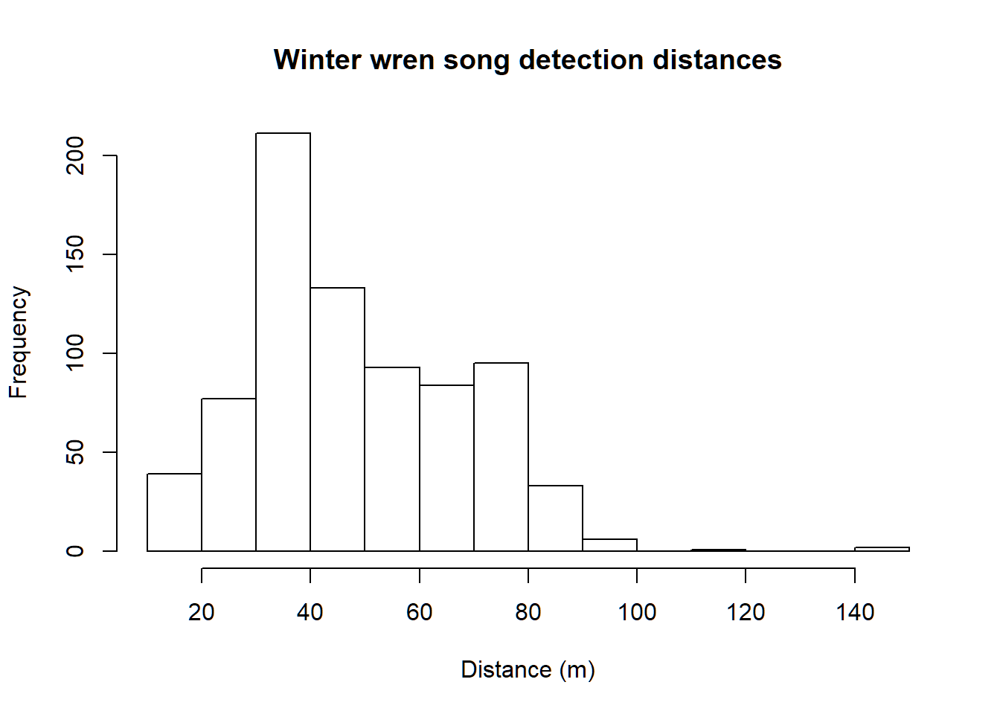
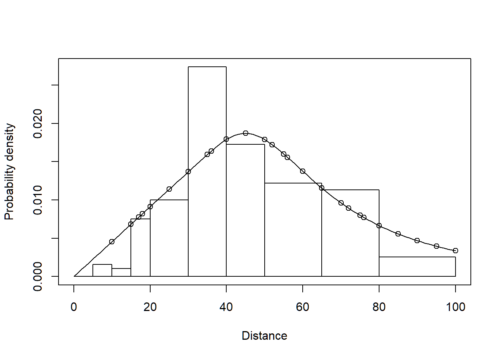
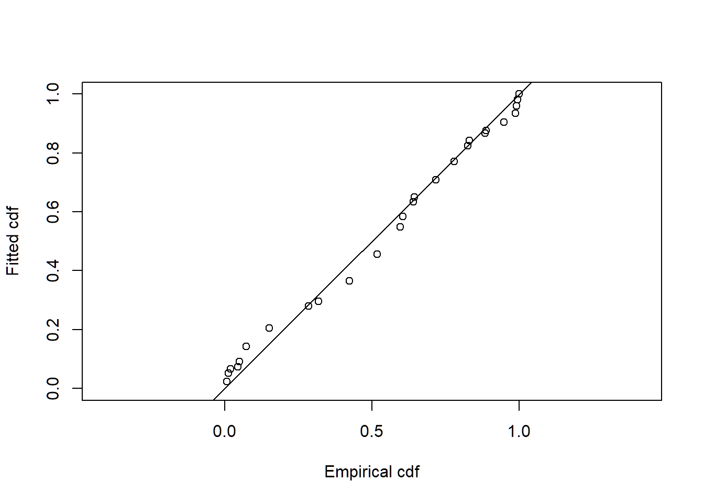

Cue counts of bird song
In this exercise, we use R (R Core Team 2019) and the Distance package (Miller 2017, Miller et al. 2019) to fit different detection function models to point transect cue count survey data of winter wren (Troglodytes troglodytes) density and abundance. These data were part of a study described by Buckland (2006).
1 Objectives
- Estimate density of cues from point transect data
- Convert cue density to animal density using rate of song production
2 Survey design
Each of the 32 point count stations were visited twice. During each visit, the observer recorded distances to all songs detected during a 5-minute sampling period (Figure 1).

Montrave study area; white circles are point count stations.
In addition, 43 male winter wrens were observed and their rate of song production was measured. The mean cue rate, along with its standard error (between individuals) was calculated and included in the data set to serve as a multiplier.
The fields of the wren_cuecount data set are:
- Region.Label - identifier of regions: in this case there is only one region and set to ‘Montrave’
- Area - size of the study region (hectares): 33.2ha
- Sample.Label - point transect identifier (numbered 1-32)
- Cue.rate - production of cues (per minute)
- Cue.rate.SE - standard error of cue production rate (between individuals)
- object - unique identifier for each detected winter wren
- distance - radial distance (metres) to each detection
- Search.time - Duration of listening at each station (minutes)
- Study.Area - this is the name of the study, ‘Montrave 3’
3 Accessing the Distance package and cue count data
This command assumes that the dsdata package has been installed on your computer. The R workspace wren_cuecount contains detections of winter wrens from the line transect surveys of Buckland (2006).
library(Distance)
data(wren_cuecount)Examine the first few rows of wren_cuecount using the function head()
head(wren_cuecount)Note there is no field in the data to indicate sampling effort. With line transects, the lengths of each transect were provided to measure effort. For point transects, the number of visits to each station was specified. In this data set, all that is specified is Search.time the length of time each station was sampled. Note, each station was visited twice and sampling was 5 minutes in length on each visit. Hence Search.time is recorded as 10. Note also the units of measure of Search.time must be consistent with the units of measure of cue rate.
4 Examine the distribution of detection distances
Gain familiarity with the perpendicular distance data using the hist() function
hist(wren_cuecount$distance, xlab="Distance (m)", main="Winter wren song detection distances")Note the long right tail we will cut off with the truncation argument to ds().
5 Fitting a simple detection function model with ds
As noted above, Effort is missing from the data. With cue count surveys, effort is measured in time rather than length or number of visits. Therefore we define a new field Effort and set it equal to the Search.time field.
Note: no converstion.factor is specified in the call to ds() because it is only the detection function that is of interest at this step of the analysis, nothing about density or abundance.
conversion.factor <- convert_units("meter", NULL, "hectare")
wren_cuecount$Effort <- wren_cuecount$Search.time
wrensong.hr <- ds(wren_cuecount, transect="point", key="hr", adjustment=NULL,
truncation=100)Visually inspect the fitted detection function with the plot() function, specifying the cutpoints histogram with argument breaks:
cutpoints <- c(0,5,10,15,20,30,40,50,65,80,100)
plot(wrensong.hr, breaks=cutpoints, pdf=TRUE)5.1 Caution
Do not examine the abundance or density estimates produced by summary(wrensong.hr) because as the results it contains are nonsense. These summary values do not properly recognise that the unit of effort is time rather than visits for the point count survey. This additional component of the analysis is provided in the next step.
6 Introducing a new function dht2
The function dht2 provides additional capacity for providing density or abundance estimates in novel situations such as cue counts where multipliers need to be incorporated.
The argument multipliers in dht2 provides the mechanism whereby the cue production rate and its uncertainty are incorporated into the analysis.
To properly perform the calculations responsible for converting song density to bird density, we enlist the aide of the function dht2. The additional information about cue rates and their variability are provided in a list. The multiplier in the list is required to have the name creation and it contains both the cue rate point estimate and its associated measure of precision.
cuerate <- unique(wren_cuecount[ , c("Cue.rate","Cue.rate.SE")])
names(cuerate) <- c("rate", "SE")
(mult <- list(creation=cuerate))Additional arguments are also passed to dht2. flatfile is the name of the data set and strat_formula contains information about stratification that might exist in the survey design. The Montrave study had no stratification, inference was only for the 33 hectare woodland, so strat_formula here is simply constant ~1.
Results of the overall winter wren density estimate is provided by a print method, specifying report="density". The alternative for the report argument is report="abundance".
wren.estimate <- dht2(wrensong.hr, flatfile=wren_cuecount, strat_formula=~1,
multipliers=mult, convert_units=conversion.factor)
print(wren.estimate, report="density")6.1 Absolute goodness of fit
We assess the goodness of fit of the hazard rate model to the winter wren cue count data.
gof_ds(wrensong.hr)Note the distinct lack of fit to the song data. This is because of many detections at the identical distances from birds being stationary and singing. This induces a phenomenon known as over dispersion.
7 References
Buckland ST (2006) Point transect surveys for songbirds: robust methodologies. The Auk 123:345–345. https://doi.org/10.1093/auk/123.2.345
Miller DL (2017) Distance: Distance Sampling Detection Function and Abundance Estimation. R package version 0.9.7. should be 0.9.9 but not on CRAN https://CRAN.R-project.org/package=Distance
Miller DL, Rexstad E, Thomas L, Marshall L, Laake JL (2019) Distance Sampling in R. Journal of Statistical Software 89(1), 1-28. doi:10.18637/jss.v089.i01 http://doi.org/10.18637/jss.v089.i01.
R Core Team (2018) R: A language and environment for statistical computing. R Foundation for Statistical Computing, Vienna, Austria. https://www.R-project.org/
Cue counting of Montrave winter wrens
library(Distance)
data(wren_cuecount)
head(wren_cuecount)## Region.Label Area Sample.Label Cue.rate Cue.rate.SE object distance
## 1 Montrave 33.2 1 1.4558 0.2428 38 50
## 2 Montrave 33.2 1 1.4558 0.2428 39 55
## 3 Montrave 33.2 1 1.4558 0.2428 40 55
## 4 Montrave 33.2 1 1.4558 0.2428 41 55
## 5 Montrave 33.2 1 1.4558 0.2428 46 50
## 6 Montrave 33.2 1 1.4558 0.2428 47 50
## Study.Area Search.time
## 1 montrave 3 10
## 2 montrave 3 10
## 3 montrave 3 10
## 4 montrave 3 10
## 5 montrave 3 10
## 6 montrave 3 10hist(wren_cuecount$distance, xlab="Distance (m)",
main="Winter wren song detection distances")
conversion.factor <- convert_units("meter", NULL, "hectare")
wren_cuecount$Effort <- 10 # wren_cuecount$Search.time
wrensong.hr <- ds(wren_cuecount, transect="point", key="hr", adjustment=NULL,
truncation=100)
cutpoints <- c(0,5,10,15,20,30,40,50,65,80,100)
plot(wrensong.hr, breaks=cutpoints, pdf=TRUE)
cuerate <- unique(wren_cuecount[ , c("Cue.rate","Cue.rate.SE")])
names(cuerate) <- c("rate", "SE")
(mult <- list(creation=cuerate))## $creation
## rate SE
## 1 1.4558 0.2428wren.estimate <- dht2(wrensong.hr, flatfile=wren_cuecount, strat_formula=~1,
multipliers=mult, convert_units=conversion.factor)
print(wren.estimate, report="density")## Summary statistics:
## .Label Area CoveredArea Effort n k ER se.ER cv.ER
## Total 33.2 1005.31 320 771 32 2.409 0.236 0.098
##
## Density estimates:
## .Label Estimate se cv LCI UCI df
## Total 1.2018 0.238 0.198 0.8173 1.7674 520.656
##
## Component percentages of variance:
## .Label Detection ER Multipliers
## Total 4.82 24.38 70.79gof_ds(wrensong.hr)
##
## Goodness of fit results for ddf object
##
## Distance sampling Cramer-von Mises test (unweighted)
## Test statistic = 1.69439 p-value = 6.24742e-057 Notes regarding the cue count estimates of Montrave winter wrens
This vignette uses the function dht2 because that function knows how to incorporate multipliers such as cue rates and propogate the uncertainty in cue rate into overall uncertainty in density and abundance. Because there is uncertainty coming not only from encounter rate variability and uncertainty in detection function parameters, but also from cue rate variability, the relative contribution of each source of uncertainty is tablated. This is the last table produced by printing the wren.estimate object. For the Montrave winter wren data, only 4% of the uncertainty in the density estimate is attributable to the detection function, 24% attributable to encounter rate variability and 71% attributable to between-individual variability in call rate.
This insight suggests that if this survey was to be repeated, exerting more effort in measuring between-individual variation in call rate would likely yield the most benefits in tightening the precision in density estimates.
Also note the poor fit of the model to the data; the P-value for the Cramer von-Mises test is <<0.05. This is caused by over-dispersion in the distribution of detected call distances. A single individual may sit on a tree branch and emit many song bursts, leading to a jagged distribution of call distances that is not well fitted by a smooth detection function. That over-dispersion will not bias the density estimates.